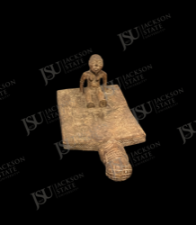

African Art Record
Luba Lukasa Memory Board
Luba peoples, attribution high
This Luba lukasa memory board is carved from wood with raised and incised mnemonic designs and a small seated figure. Lukasa boards were used by initiated members of the Mbudye association as tactile and visual prompts for histories, political knowledge, genealogy, and moral instruction. The object’s patterned surface turns memory into a sculptural field.
Collection Context
Catalog framing
This record is published as part of the Jackson State University African Art Collection and remains distinct from the Department of Art permanent collection browse path.
High for Luba lukasa identification based on image and close museum records, specific encoded meaning and local history are undocumented.
Object Description
Interpretive description
This Luba lukasa memory board is carved from wood with raised and incised mnemonic designs and a small seated figure. Lukasa boards were used by initiated members of the Mbudye association as tactile and visual prompts for histories, political knowledge, genealogy, and moral instruction. The object’s patterned surface turns memory into a sculptural field.